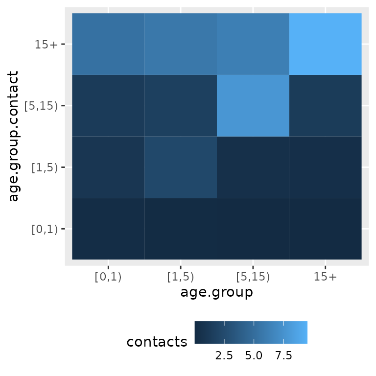
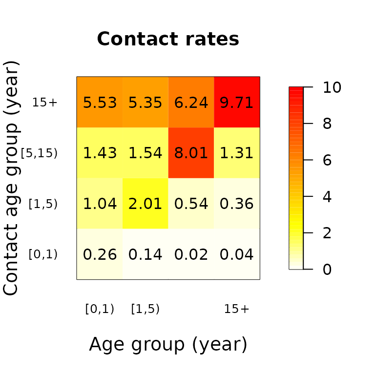
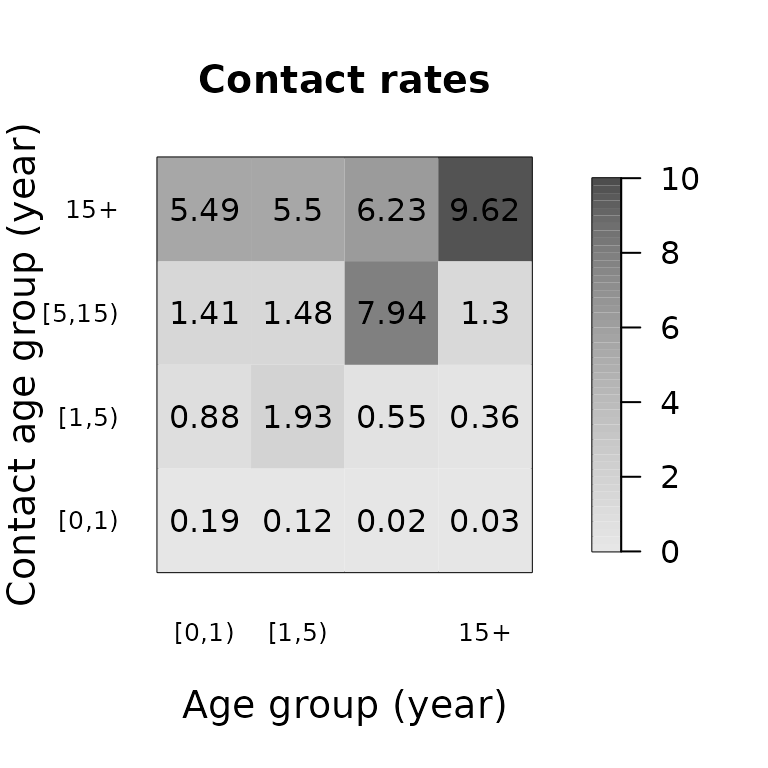

Introduction to socialmixr
Sebastian Funk
2023-07-27
Source:vignettes/socialmixr.Rmd
socialmixr.Rmdsocialmixr
is an R package to derive social mixing matrices from
survey data. These are particularly useful for age-structured infectious
disease models. For background on age-specific mixing matrices and
what data inform them, see, for example, the paper on POLYMOD by (Mossong et al. 2008).
Usage
The latest stable version of the socialmixr package is
installed via
install.packages("socialmixr")The latest development version of the socialmixr package
can be installed via
devtools::install_github("epiforecasts/socialmixr")To load the package, use
#>
#> Attaching package: 'socialmixr'
#> The following object is masked from 'package:utils':
#>
#> citeAt the heart of the socialmixr package is the
contact_matrix() function. This extracts a contact matrix
from survey data. You can use the R help to find out about
usage of the contact_matrix() function, including a list of
examples:
?contact_matrixThe POLYMOD data are included with the package and can be loaded using
data(polymod)An example use would be
contact_matrix(polymod, countries = "United Kingdom", age.limits = c(0, 1, 5, 15))
#> Using POLYMOD social contact data. To cite this in a publication, use the 'cite' function
#> Removing participants that have contacts without age information. To change this behaviour, set the 'missing.contact.age' option
#> $matrix
#> contact.age.group
#> age.group [0,1) [1,5) [5,15) 15+
#> [0,1) 0.40000000 0.8000000 1.266667 5.933333
#> [1,5) 0.11250000 1.9375000 1.462500 5.450000
#> [5,15) 0.02450980 0.5049020 7.946078 6.215686
#> 15+ 0.03230337 0.3581461 1.290730 9.594101
#>
#> $participants
#> age.group participants proportion
#> 1: [0,1) 15 0.01483680
#> 2: [1,5) 80 0.07912957
#> 3: [5,15) 204 0.20178042
#> 4: 15+ 712 0.70425321This generates a contact matrix from the UK part of the POLYMOD study, with age groups 0-1, 1-5, 5-15 and 15+ years. It contains the mean number of contacts that each member of an age group (row) has reported with members of the same or another age group (column).
Surveys
The key argument to the contact_matrix() function is the
survey that it supposed to use. The socialmixr
package includes the POLYMOD survey, which will be used if not survey is
specified. It also provides access to all surveys in the Social contact
data community on Zenodo. The
available surveys can be listed (if an internet connection is available)
with
A survey can be downloaded using the get_survey()
command. This will get the relevant data of a survey given its Zenodo
DOI (as returned by list_surveys()). All other relevant
commands in the socialmixr package accept a DOI, but if a
survey is to be used repeatedly it is worth downloading it and storing
it locally to avoid the need for a network connection and speed up
processing.
peru_survey <- get_survey("https://doi.org/10.5281/zenodo.1095664")
saveRDS(peru_survey, "peru.rds")This way, the peru data set can be loaded in the future
without the need for an internet connection using
peru_survey <- readRDS("peru.rds")Some surveys may contain data from multiple countries. To check this,
use the survey_countries function
survey_countries(polymod)
#> Using POLYMOD social contact data. To cite this in a publication, use the 'cite' function
#> [1] "Italy" "Germany" "Luxembourg" "Netherlands"
#> [5] "Poland" "United Kingdom" "Finland" "Belgium"If one wishes to get a contact matrix for one or more specific
countries, a countries argument can be passed to
contact_matrix(). If this is not done, the different
surveys contained in a dataset are combined as if they were one single
sample (i.e., not applying any population-weighting by country or other
correction).
By default, socialmixr uses the POLYMOD survey. A reference for any
given survey can be obtained using cite(), e.g.
cite(polymod)
#> Using POLYMOD social contact data. To cite this in a publication, use the 'cite' function
#> Mossong J, Hens N, Jit M, Beutels P, Auranen K, Mikolajczyk R, Massari
#> M, Salmaso S, Tomba GS, Wallinga J, Heijne J, Sadkowska-Todys M,
#> Rosinska M, Edmunds WJ (2017). "POLYMOD social contact data."
#> doi:10.5281/zenodo.1157934 <https://doi.org/10.5281/zenodo.1157934>,
#> Version 1.1.Bootstrapping
To get an idea of uncertainty of the contact matrices, a bootstrap
can be used using the sample.participants argument of
contact_matrix(). If this argument is set to TRUE,
participants are sampled (with replacement, to get the same number of
participants of the original study) every time the
contact_matrix() function is called, and thus a different
matrix returned every time. From these matrices, derived quantities can
be obtained, for example the mean:
m <- replicate(
n = 5,
contact_matrix(
polymod,
countries = "United Kingdom", age.limits = c(0, 1, 5, 15),
sample.participants = TRUE
)
)
#> Using POLYMOD social contact data. To cite this in a publication, use the 'cite' function
#> Removing participants that have contacts without age information. To change this behaviour, set the 'missing.contact.age' option
#> Using POLYMOD social contact data. To cite this in a publication, use the 'cite' function
#> Removing participants that have contacts without age information. To change this behaviour, set the 'missing.contact.age' option
#> Using POLYMOD social contact data. To cite this in a publication, use the 'cite' function
#> Removing participants that have contacts without age information. To change this behaviour, set the 'missing.contact.age' option
#> Using POLYMOD social contact data. To cite this in a publication, use the 'cite' function
#> Removing participants that have contacts without age information. To change this behaviour, set the 'missing.contact.age' option
#> Using POLYMOD social contact data. To cite this in a publication, use the 'cite' function
#> Removing participants that have contacts without age information. To change this behaviour, set the 'missing.contact.age' option
mr <- Reduce("+", lapply(m["matrix", ], function(x) x / ncol(m)))
mr
#> contact.age.group
#> age.group [0,1) [1,5) [5,15) 15+
#> [0,1) 0.34627193 1.0019424 1.434994 6.007581
#> [1,5) 0.10410588 1.9349660 1.597825 5.530266
#> [5,15) 0.02003102 0.4532079 8.373907 6.300782
#> 15+ 0.03415509 0.3520965 1.239696 9.399476Demography
Obtaining symmetric contact matrices, splitting out their components
(see below) and age-specific participant weights require information
about the underlying demographic composition of the survey population.
This can be passed to contact_matrix() as the
survey.pop argument, a data.frame with two
columns, lower.age.limit (denoting the lower end of the age
groups) and population (denoting the number of people in
each age group). If no survey.pop is not given,
contact_matrix() will try to obtain the age structure of
the population (as per the countries argument) from the World Population Prospects of
the United Nations, using estimates from the year that closest matches
the year in which the contact survey was conducted.
If demographic information is used, this is returned by
contact_matrix() as the demography field in
the results list. It is possible to enforce or prevent the function to
return demography data by using the return.demography
option.
contact_matrix(polymod,
countries = "United Kingdom", age.limits = c(0, 20),
return.demography = TRUE
)$demography
#> age.group population proportion year
#> 1: [0,20) 14799290 0.2454816 2005
#> 2: 20+ 45487461 0.7545184 2005Symmetric contact matrices
Conceivably, contact matrices should be symmetric: the total number of contacts made by members of one age group with those of another should be the same as vice versa. Mathematically, if \(m_{ij}\) is the mean number of contacts made by members of age group \(i\) with members of age group \(j\), and the total number of people in age group \(i\) is \(N_i\), then
\[m_{ij} N_i = m_{ji}N_j\]
Because of variation in the sample from which the contact matrix is obtained, this relationship is usually not fulfilled exactly. In order to obtain a symmetric contact matrix that fulfills it, one can use
\[m'_{ij} = \frac{1}{2N_i} (m_{ij} N_i + m_{ji} N_j)\]
To get this version of the contact matrix, use
symmetric = TRUE when calling the
contact_matrix() function.
contact_matrix(polymod, countries = "United Kingdom", age.limits = c(0, 1, 5, 15), symmetric = TRUE)
#> Using POLYMOD social contact data. To cite this in a publication, use the 'cite' function
#> Removing participants that have contacts without age information. To change this behaviour, set the 'missing.contact.age' option
#> Warning in pop_age(survey.pop, part.age.group.present, ...): Not all age groups represented in population data (5-year age band).
#> Linearly estimating age group sizes from the 5-year bands.
#> $matrix
#> contact.age.group
#> [0,1) [1,5) [5,15) 15+
#> [1,] 0.40000000 0.6250000 0.764365 4.122919
#> [2,] 0.15625000 1.9375000 1.406063 5.929829
#> [3,] 0.07148821 0.5260153 7.946078 7.428739
#> [4,] 0.05759306 0.3313352 1.109550 9.594101
#>
#> $demography
#> age.group population proportion year
#> 1: [0,1) 690734 0.01145748 2005
#> 2: [1,5) 2762936 0.04582990 2005
#> 3: [5,15) 7385454 0.12250542 2005
#> 4: 15+ 49447627 0.82020720 2005
#>
#> $participants
#> age.group participants proportion
#> 1: [0,1) 15 0.01483680
#> 2: [1,5) 80 0.07912957
#> 3: [5,15) 204 0.20178042
#> 4: 15+ 712 0.70425321Contact rates per capita
The contact matrix per capita \(c_{ij}\) contains the social contact rates of one individual of age \(i\) with one individual of age \(j\), given the population details. For example, \(c_{ij}\) is used in infectious disease modelling to calculate the force of infection, which is based on the likelihood that one susceptible individual of age \(i\) will be in contact with one infectious individual of age \(j\). The contact rates per capita are calculated as follows:
\[c_{ij} = \tfrac{m_{ij}}{N_{j}}\]
To get the per capita contact matrix, use
per.capita = TRUE when calling the
contact_matrix() function. Please note that if the option
symmetric = TRUE is specified, the contact matrix \(m_{ij}\) can show asymmetry if the
sub-population sizes are different, but the contact matrix per capita
will be fully symmetric:
\[c'_{ij} = \frac{m_{ij} N_i + m_{ji} N_j}{2N_iN_j} = c'_{ji}\]
contact_matrix(survey = polymod, countries = "Germany", age.limits = c(0, 60), symmetric = TRUE, per.capita = TRUE)
#> $matrix
#> contact.age.group
#> [0,60) 60+
#> [1,] 7.743879 0.8967442
#> [2,] 2.711694 2.1267606
#>
#> $matrix.per.capita
#> contact.age.group
#> [0,60) 60+
#> [1,] 1.261735e-07 4.418248e-08
#> [2,] 4.418248e-08 1.047852e-07
#>
#> $demography
#> age.group population proportion year
#> 1: [0,60) 61374868 0.7514869 2005
#> 2: 60+ 20296375 0.2485131 2005
#>
#> $participants
#> age.group participants proportion
#> 1: [0,60) 1062 0.8329412
#> 2: 60+ 213 0.1670588Splitting contact matrices
The contact_matrix() contains a simple model for the
elements of the contact matrix, by which it is split into a
global component, as well as three components representing
contacts, assortativity and demography. In
other words, the elements \(m_{ij}\) of
the contact matrix are modeled as
\[ m_{ij} = q d_i a_{ij} n_j \]
where \(q d_i\) is the number of contacts that a member of group \(i\) makes across age groups, \(n_j\) is the proportion of the surveyed population in age group \(j\). The constant \(q\) is set to the value of the largest eigenvalue of \(m_{ij}\); if used in an infectious disease model, it can be replaced by the basic reproduction number \(R_0\).
To model the contact matrix in this way with the
contact_matrix() function, set split = TRUE.
The components of the matrix are returned as elements
normalisation (\(q\)),
contacts (\(d_i\)),
matrix (\(a_{ij}\)) and
demography (\(n_j\)) of
the resulting list.
contact_matrix(polymod, countries = "United Kingdom", age.limits = c(0, 1, 5, 15), split = TRUE)
#> Using POLYMOD social contact data. To cite this in a publication, use the 'cite' function
#> Removing participants that have contacts without age information. To change this behaviour, set the 'missing.contact.age' option
#> Warning in pop_age(survey.pop, part.age.group.present, ...): Not all age groups represented in population data (5-year age band).
#> Linearly estimating age group sizes from the 5-year bands.
#> $mean.contacts
#> [1] 11.55481
#>
#> $normalisation
#> [1] 1.039163
#>
#> $contacts
#> [1] 0.6995727 0.7464190 1.2235173 0.9390331
#>
#> $matrix
#> [,1] [,2] [,3] [,4]
#> [1,] 4.1561551 2.0780776 1.230914 0.8611839
#> [2,] 1.0955555 4.7169752 1.332022 0.7413849
#> [3,] 0.1456110 0.7498969 4.415104 0.5158328
#> [4,] 0.2500527 0.6930808 0.934443 1.0374170
#>
#> $demography
#> age.group population proportion year
#> 1: [0,1) 690734 0.01145748 2005
#> 2: [1,5) 2762936 0.04582990 2005
#> 3: [5,15) 7385454 0.12250542 2005
#> 4: 15+ 49447627 0.82020720 2005
#>
#> $participants
#> age.group participants proportion
#> 1: [0,1) 15 0.01483680
#> 2: [1,5) 80 0.07912957
#> 3: [5,15) 204 0.20178042
#> 4: 15+ 712 0.70425321Filtering
The filter argument to contact_matrix() can
be used to select particular participants or contacts. For example, in
the polymod dataset, the indicators cnt_home,
cnt_work, cnt_school,
cnt_transport, cnt_leisure and
cnt_otherplace take value 0 or 1 depending on where a
contact occurred. Any filter can be applied to the data, if given as a
list of the form (column=filter_value). As such, only contacts that have
‘filter_value’ in ‘column’ will be considered for the generated contact
matrix:
# contact matrix for school-related contacts
contact_matrix(polymod, age.limits = c(0, 20, 60), filter = list(cnt_school = 1))$matrix
#> contact.age.group
#> age.group [0,20) [20,60) 60+
#> [0,20) 5.15826279 1.09311741 0.03570114
#> [20,60) 0.45610034 0.47434436 0.01453820
#> 60+ 0.08917836 0.07314629 0.03507014
# contact matrix for work-related contacts involving physical contact
contact_matrix(polymod, age.limits = c(0, 20, 60), filter = list(cnt_work = 1, phys_contact = 1))$matrix
#> contact.age.group
#> age.group [0,20) [20,60) 60+
#> [0,20) 0.04266274 0.06325855 0.009194557
#> [20,60) 0.16020525 1.26966933 0.145952109
#> 60+ 0.04212638 0.29287864 0.062186560
# contact matrix for daily contacts at home with males
contact_matrix(polymod, age.limits = c(0, 20, 60), filter = list(cnt_home = 1, cnt_gender = "M", duration_multi = 5))$matrix
#> contact.age.group
#> age.group [0,20) [20,60) 60+
#> [0,20) 0.39242369 0.5855094 0.03089371
#> [20,60) 0.25919589 0.3940690 0.04875962
#> 60+ 0.05717151 0.1153460 0.23871615Participant weights
Temporal aspects and demography
Participant weights are commonly used to align sample and population characteristics in terms of temporal aspects and the age distribution. For example, the day of the week has been reported as a driving factor for social contact behavior, hence to obtain a weekly average, the survey data should represent the weekly 2/5 distribution of weekend/week days. To align the survey data to this distribution, one can obtain participant weights in the form of: \[w_{\textrm{day.of.week}} = \tfrac{5/7}{N_{\textrm{weekday}}/N} \text{ OR } \tfrac{2/7}{N_{\textrm{weekend}}/N}\] with sample size \(N\), and \(N_{weekday}\) and \(N_{weekend}\) the number of participants that were surveyed during weekdays and weekend days, respectively. It is possible to remove the constant values (e.g. \(w = 5/N_{weekday}\)), which results in the same standardized weights. However, we opt to use the relative proportions to calculate weights to enable truncation with a generic threshold (see below).
Another driver of social contact patterns is age. To improve the representativeness of survey data, age-specific weights can be calculated as: \[w_{age} = \tfrac{P_{a}\ /\ P}{N_{a}\ /\ N}\] with \(P\) the population size, \(P_a\) the population fraction of age \(a\), \(N\) the survey sample size and \(N_a\) the survey fraction of age \(a\). The combination of age-specific and temporal weights for participant \(i\) of age \(a\) can be constructed as: \[w_{i} = w_{\textrm{age}} * w_{\textrm{day.of.week}} \] Finally, the weights can to be standardized as follows: \[\tilde{w}_{i} = \tfrac{w_{i}}{\sum_{}^{} w_{}} * N \]
If the social contact analysis is based on stratification by splitting the population into non-overlapping groups, it requires the weights to be standardized so that the weighted totals within mutually exclusive cells equal the known population totals (Kolenikov 2016). The post-stratification cells need to be mutually exclusive and cover the whole population. The post-stratified (PS) weight for participant \(i\) of is: \[\tilde{w}^{PS}_{i} = \tfrac{w_{i}}{\sum_{\text{j}}^{\text{group g}} w_{j}} * N_g\]
Temporal weights are activated in contact_matrix() by
weigh.dayofweek = TRUE and age-specific weights by
weight.age = TRUE. The post-stratification weights are
calculated by default. It is possible to obtain the participant weights
via the option return.part.weights = TRUE.
contact_matrix(
survey = polymod, age.limits = c(0, 18, 60), weigh.dayofweek = TRUE,
weigh.age = TRUE, return.part.weights = TRUE
)
#> $matrix
#> contact.age.group
#> age.group [0,18) [18,60) 60+
#> [0,18) 8.5152158 5.839458 0.7193179
#> [18,60) 2.0433998 10.318853 1.2413142
#> 60+ 0.7761051 4.354554 2.4995467
#>
#> $demography
#> age.group population proportion year
#> 1: [0,18) 52955807 0.1948624 2005
#> 2: [18,60) 157719526 0.5803634 2005
#> 3: 60+ 61084635 0.2247742 2005
#>
#> $participants
#> age.group participants proportion
#> 1: [0,18) 2462 0.3420395
#> 2: [18,60) 3745 0.5202834
#> 3: 60+ 991 0.1376771
#>
#> $participants.weights
#> age.group participant.age is.weekday weight participants proportion
#> 1: [0,18) 0 FALSE 1.4566422 27 0.0037510420
#> 2: [0,18) 0 TRUE 1.3087772 66 0.0091692137
#> 3: [0,18) 1 FALSE 1.1288977 32 0.0044456794
#> 4: [0,18) 1 TRUE 1.0143024 88 0.0122256182
#> 5: [0,18) 2 FALSE 0.9473268 39 0.0054181717
#> ---
#> 167: 60+ 83 TRUE 5.6502663 4 0.0005557099
#> 168: 60+ 84 FALSE 8.3848408 1 0.0001389275
#> 169: 60+ 84 TRUE 7.5336884 2 0.0002778550
#> 170: 60+ 85 TRUE 3.1671409 3 0.0004167824
#> 171: 60+ 90 TRUE 4.7540746 1 0.0001389275User-defined participant weights
The contact_matrix() allows to specify and use your own
participant weights. Therefore, provide the names of the columns of the
participant data you want to use to weight the reported contacts via the
weights argument.
# e.g. use household size as (dummy) weight to provide more importance to participant data from large households
contact_matrix(survey = polymod, age.limits = c(0, 18, 60), weights = "hh_size")
#> $matrix
#> contact.age.group
#> age.group [0,18) [18,60) 60+
#> [0,18) 8.9599558 5.907367 0.7338418
#> [18,60) 2.4650353 10.960550 1.2399199
#> 60+ 0.9909593 5.659468 2.7081868
#>
#> $participants
#> age.group participants proportion
#> 1: [0,18) 2462 0.3420395
#> 2: [18,60) 3745 0.5202834
#> 3: 60+ 991 0.1376771Weight threshold
If the survey population differs extensively from the demography,
some participants can end up with relatively high weights and as such,
an excessive contribution to the population average. This warrants the
limitation of single participant influences by a truncation of the
weights. To enable this in contact_matrix(), you need to
provide a numeric weight.threshold. This truncation is
applied on the standardized weights, followed by another standardization
to make sure that the sum of the weights still equals the sample size.
The latter can lead to final weights of which some little exceed the
given threshold value.
contact_matrix(
survey = polymod, age.limits = c(0, 18, 60), weigh.dayofweek = TRUE,
weigh.age = TRUE, return.part.weights = TRUE, weight.threshold = 3
)
#> $matrix
#> contact.age.group
#> age.group [0,18) [18,60) 60+
#> [0,18) 8.5152158 5.839458 0.7193179
#> [18,60) 2.0433998 10.318853 1.2413142
#> 60+ 0.7720958 4.410151 2.5401091
#>
#> $demography
#> age.group population proportion year
#> 1: [0,18) 52955807 0.1948624 2005
#> 2: [18,60) 157719526 0.5803634 2005
#> 3: 60+ 61084635 0.2247742 2005
#>
#> $participants
#> age.group participants proportion
#> 1: [0,18) 2462 0.3420395
#> 2: [18,60) 3745 0.5202834
#> 3: 60+ 991 0.1376771
#>
#> $participants.weights
#> age.group participant.age is.weekday weight participants proportion
#> 1: [0,18) 0 FALSE 1.4566422 27 0.0037510420
#> 2: [0,18) 0 TRUE 1.3087772 66 0.0091692137
#> 3: [0,18) 1 FALSE 1.1288977 32 0.0044456794
#> 4: [0,18) 1 TRUE 1.0143024 88 0.0122256182
#> 5: [0,18) 2 FALSE 0.9473268 39 0.0054181717
#> ---
#> 167: 60+ 83 TRUE 3.1063091 4 0.0005557099
#> 168: 60+ 84 FALSE 3.1063091 1 0.0001389275
#> 169: 60+ 84 TRUE 3.1063091 2 0.0002778550
#> 170: 60+ 85 TRUE 3.1063091 3 0.0004167824
#> 171: 60+ 90 TRUE 3.1063091 1 0.0001389275Numerical example
With these numeric examples, we show the importance of post-stratification weights in contrast to using the crude weights directly within age-groups. We will apply the weights by age and day of week separately in these examples, though the combination is straightforward via multiplication.
Get survey data
We start from a survey including 6 participants of 1, 2 and 3 years of age. The ages are not equally represented in the sample, though we assume they are equally present in the reference population. We will calculate the weighted average number of contacts by age and by age group, using {1,2} and {3} years of age. The following table shows the reported number of contacts per participant \(i\), represented by \(m_i\):
| age | day.of.week | age.group | m_i |
|---|---|---|---|
| 1 | weekend | A | 3 |
| 1 | weekend | A | 2 |
| 2 | weekend | A | 9 |
| 2 | week | A | 10 |
| 2 | week | A | 8 |
| 3 | week | B | 15 |
The summary statistics for the sample (N) and reference population (P) are as follows
N <- 6
N_age <- c(2, 3, 1)
N_age.group <- c(5, 1)
N_day.of.week <- c(3, 3)
P <- 3000
P_age <- c(1000, 1000, 1000)
P_age.group <- c(2000, 1000)
P_day.of.week <- c(5 / 7, 2 / 7) * 3000This survey data results in an unweighted average number of contacts:
#> [1] "unweighted average number of contacts: 7.83"and age-specific unweighted averages on the number of contacts:
| age | age.group | m_i |
|---|---|---|
| 1 | A | 2.5 |
| 2 | A | 9.0 |
| 3 | B | 15.0 |
Weight by day of week
The following table contains the participants weights based on the survey day with and without the population and sample size constants (\(w\) and \(w'\), respectively). Note that the standardized weights \(\tilde{w}\) and \(\tilde{w'}\) are the same:
| age | day.of.week | age.group | m_i | w | w_tilde | w_dot | w_dot_tilde |
|---|---|---|---|---|---|---|---|
| 1 | weekend | A | 3 | 0.57 | 0.57 | 285.71 | 0.57 |
| 1 | weekend | A | 2 | 0.57 | 0.57 | 285.71 | 0.57 |
| 2 | weekend | A | 9 | 0.57 | 0.57 | 285.71 | 0.57 |
| 2 | week | A | 10 | 1.43 | 1.43 | 714.29 | 1.43 |
| 2 | week | A | 8 | 1.43 | 1.43 | 714.29 | 1.43 |
| 3 | week | B | 15 | 1.43 | 1.43 | 714.29 | 1.43 |
Note the different scale of \(w\) and \(w'\), and the more straightforward interpretation of the numerical value of \(w\) in terms of relative differences to apply truncation. Using the standardized weights, we are able to calculate the weighted number of contacts:
| age | day.of.week | age.group | m_i | w | w_tilde | m_i * w_tilde |
|---|---|---|---|---|---|---|
| 1 | weekend | A | 3 | 0.57 | 0.57 | 1.71 |
| 1 | weekend | A | 2 | 0.57 | 0.57 | 1.14 |
| 2 | weekend | A | 9 | 0.57 | 0.57 | 5.13 |
| 2 | week | A | 10 | 1.43 | 1.43 | 14.30 |
| 2 | week | A | 8 | 1.43 | 1.43 | 11.44 |
| 3 | week | B | 15 | 1.43 | 1.43 | 21.45 |
#> [1] "weighted average number of contacts: 9.2"If the population-based weights are directly used in age-specific groups, the contact behavior of the 3 year-old participant, which participated during week day, is inflated due to the under-representation of week days in the survey sample. In addition, the number of contacts for 1 year-old participants is decreased because of the over-representation of weekend days in the survey. Using the population-weights within the two aggregated age groups, we obtain a more intuitive weighting for age group A, but it is still skewed for individuals in age group B. As such, this weighted average for age group B has no meaning in terms of social contact behavior:
|
|
If we subdivide the population, we need to use post-stratification weights (“w_PS”) in which the weighted totals within mutually exclusive cells equal the sample size. For the age groups, this goes as follows:
| age | day.of.week | age.group | m_i | w | w_tilde | w_PS |
|---|---|---|---|---|---|---|
| 1 | weekend | A | 3 | 0.57 | 0.57 | 0.62 |
| 1 | weekend | A | 2 | 0.57 | 0.57 | 0.62 |
| 2 | weekend | A | 9 | 0.57 | 0.57 | 0.62 |
| 2 | week | A | 10 | 1.43 | 1.43 | 1.56 |
| 2 | week | A | 8 | 1.43 | 1.43 | 1.56 |
| 3 | week | B | 15 | 1.43 | 1.43 | 1.00 |
The weighted means equal:
| age.group | m_i * w_PS |
|---|---|
| A | 7.352 |
| B | 15.000 |
Weight by age
We repeated the example by calculating age-specific participant weights on the population and age-group level:
| age | day.of.week | age.group | m_i | w | w_tilde | w_PS |
|---|---|---|---|---|---|---|
| 1 | weekend | A | 3 | 1.00 | 1.00 | 1.25 |
| 1 | weekend | A | 2 | 1.00 | 1.00 | 1.25 |
| 2 | weekend | A | 9 | 0.67 | 0.67 | 0.83 |
| 2 | week | A | 10 | 0.67 | 0.67 | 0.83 |
| 2 | week | A | 8 | 0.67 | 0.67 | 0.83 |
| 3 | week | B | 15 | 2.00 | 2.00 | 1.00 |
#> [1] "weighted average number of contacts: 8.85"If the age-specific weights are directly used within the age groups, the contact behavior for age group B is inflated to unrealistic levels and the number of contacts for age group A is artificially low:
|
|
Using the post-stratification weights, we end up with:
| age.group | m_i * w_PS |
|---|---|
| A | 5.732 |
| B | 15.000 |
Apply threshold
We start with survey data of 14 participants of 1, 2 and 3 years of age, sampled from a population in which all ages are equally present. Given the high representation of participants aged 1 year, the age-specific proportions are skewed in comparison with the reference population. If we calculate the age-specific weights and (un)weighted average number of contacts, we end up with:
| age | day.of.week | age.group | m_i | w | w_tilde |
|---|---|---|---|---|---|
| 1 | weekend | A | 3 | 0.47 | 0.47 |
| 1 | weekend | A | 2 | 0.47 | 0.47 |
| 1 | weekend | A | 3 | 0.47 | 0.47 |
| 1 | weekend | A | 2 | 0.47 | 0.47 |
| 1 | weekend | A | 3 | 0.47 | 0.47 |
| 1 | weekend | A | 2 | 0.47 | 0.47 |
| 1 | weekend | A | 3 | 0.47 | 0.47 |
| 1 | weekend | A | 2 | 0.47 | 0.47 |
| 1 | weekend | A | 3 | 0.47 | 0.47 |
| 1 | weekend | A | 2 | 0.47 | 0.47 |
| 2 | weekend | A | 9 | 1.56 | 1.56 |
| 2 | week | A | 10 | 1.56 | 1.56 |
| 2 | week | A | 8 | 1.56 | 1.56 |
| 3 | week | B | 30 | 4.67 | 4.67 |
#> [1] "unweighted average number of contacts: 5.86"
#> [1] "weighted average number of contacts: 13.86"The single participant of 3 years of age has a very large influence on the weighted population average. As such, we propose to truncate the relative age-specific weights \(w\) at 3. As such, the weighted population average equals:
#> [1] "weighted average number of contacts after truncation: 10.28"Plotting
Using ggplot2
The contact matrices can be plotted by using the
geom_tile() function of the ggplot2
package.
library("reshape2")
library("ggplot2")
df <- melt(mr, varnames = c("age.group", "age.group.contact"), value.name = "contacts")
ggplot(df, aes(x = age.group, y = age.group.contact, fill = contacts)) +
theme(legend.position = "bottom") +
geom_tile()
Using R base
The contact matrices can also be plotted with the
matrix_plot() function as a grid of colored rectangles with
the numeric values in the cells. Heat colors are used by default, though
this can be changed.
matrix_plot(mr)
matrix_plot(mr, color.palette = gray.colors)